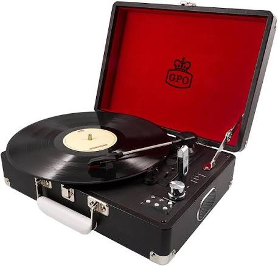
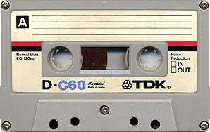
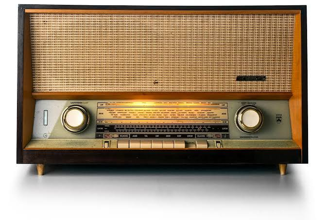
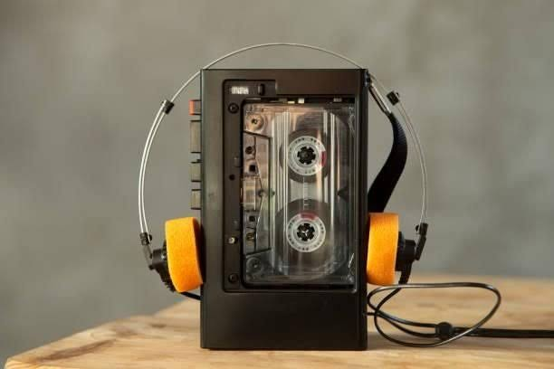
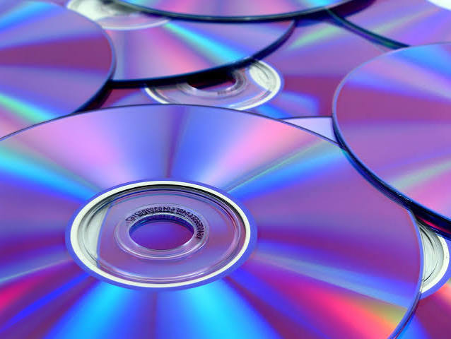

Como se ouvia música antigamente
Hoje é muito fácil ouvir música, basta ir ao Spotify, Youtube Music, Apple Music, etc... Mas antigamente...
Como se ouvia música antigamente
- Discos de vinil coloca-se o disco num gira-discos para que este reproduzir música. Para mudar de música é preciso levantar a agulha e movê-la
- Cassetes permitiam que as pessoas gravassem músicas diretamente do rádio ou de discos e criam-se mixtapes
- Rádio continua a ser um método muito comum de descobrir música
- Walkman foi lançado pela Sony em 1979 e permitiu que as pessoas levassem as fitas das cassetes no bolso e ouvissem música com fones
- CD (Compact Disc) permitiu que se ouvisse música de uma forma mais rápida, pois como os vinils podia haver chiados e com as cassetes a fita poderia ficar encravada





Músicas dos anos 60, 70 e 80